1Laško je bilo v začetku 19. stoletja srednje velik trg s slabimi prometnimi povezavami, kjer so prebivali obrtniki, ki so se poleg svoje obrti ukvarjali tudi s kmetijstvom. Železniška povezava, ki jo je Laško dobilo leta 1849, je skupaj s cesto Celje–Zidani Most pomenila prvo sodobno prometno povezavo. Boljša prometna povezanost kraja je spodbudila njegov gospodarski razvoj. Raziskava se osredotoča na demografsko analizo prebivalstva Laškega in njegove okolice v letih 1845–1848, ko je skozi trg potekala gradnja Južne železnice. Glavni vir predstavljajo krstne, poročne in mrliške knjige župnije Laško. Množica delavcev, ki so gradili Južno železnico, je v Laško prinesla obilo nemira, novih priložnosti za zaslužek lokalnega prebivalstva in epidemijo pegastega tifusa. Slednja je izbruhnila med delavci, ki so gradili železniško progo, in se nato razširila tudi med lokalno prebivalstvo.
2Ključne besede: demografija, gradnja Južne železnice Dunaj–Trst, Laško, 19. stoletje
1At the beginning of the 19th century, Laško was a medium-sized market town with poor transport links, inhabited by artisans. Together with the road from Celje to Zidani Most, the railway connection that reached Laško in 1849 represented the first modern transport connection. The town’s improved transport connectivity stimulated its economic development. The present research, primarily based on the church registers of the Laško parish, focuses on the demographic analysis of the Laško population during the period when the southern railway was being constructed (1845–1848). The large number of construction workers building the southern railway brought plenty of unrest, new opportunities for the local population, and an epidemic of spotted typhus to the town. The latter broke out among the construction workers and spread among the local population.
2Keywords: demography, construction of the Southern Railway between Vienna and Trieste, Laško, the 19th century
119. stoletje je bilo obdobje, ko se je v mestih in trgih na območju današnje Slovenije začel proces modernizacije ali prehoda iz tradicionalne, predindustrijske družbe v moderno družbo. Pri razvoju Laškega iz polagrarnega trga v mesto z razvito industrijo in turizmom so bistveno vlogo odigrali posamezni modernizacijski sunki. Najpomembnejši dejavnik za modernizacijo Laškega so bila brez dvoma bogata nahajališča premoga, ki so ga začeli v bližnji okolici Laškega izkopavati konec 18. stoletja. Na novo razvijajoči se premogovniki v Laškem in Zasavju so bili tudi razlog, da je bila skozi Laško speljana trasa Južne železnice. Dobra prometna povezava je Laško povezala s svetom in postavila osnove za kasnejši gospodarski razvoj kraja, katerega pomemben del sta predstavljala pivovarna, ki se je sredi 19. stoletja prelevila iz obrtnega v industrijski obrat, in zdravilišče, ki se je razvilo kmalu po odprtju Južne železnice. Modernizacija je vplivala tudi na življenje prebivalstva v Laškem in njegovi bližnji agrarni okolici.
2Laško je sredi 18. stoletja imelo 64 hiš, kar ga je uvrščalo med srednje velike trge na Štajerskem.1 Bližnja okolica trga je bila v 18. stoletju pretežno agrarna, prevladovale so predvsem srednje velike (polovične in četrtinske) kmetije in kajžarije.2 Okoli leta 1820 se je število prebivalcev Laškega že precej povečalo, saj je Laško štelo že 144 hiš, v katerih je prebivalo 545 prebivalcev.3 Med tržani so v tistem času prevladovali obrtniki. To je Laško uvrščalo med večje trge na Spodnjem Štajerskem in s tem tudi na Slovenskem, saj je bilo povprečno število hiš v trgih in mestih na Slovenskem sredi 18. stoletja 61,9.4 V celjskem okrožju je bilo sredi 18. stoletja povprečno število hiš v trgih 55,7, v mestih pa 122,3.5
3Laško je bilo v začetku 19. stoletja sedež gospostva, okraja in deželskega sodišča. V njem so poleg maloštevilnih uradnikov prebivali obrtniki in nekaj trgovcev, ki so se poleg obrti ukvarjali tudi s kmetijstvom za lastne potrebe.
4V začetku 19. stoletja so bile prometne povezave, ki so vodile skozi trg, še zelo slabe, primerne le za pešačenje ali ježo. Šele v letih 1815–1816 so zgradili sedanjo cesto Celje–Zidani Most, v okviru katere so leta 1826 ponovno zgradili most v Zidanem Mostu.6
5Laško je v 19. stoletje stopilo kot trg z bornimi prometnimi povezavami. Prebivalci so se poleg trgovine in obrti ukvarjali tudi s kmetijstvom. Prve večje spremembe sta v Laško prinesli izgradnja Južne železnice in marčna revolucija leta 1848, ki ji je sledila zemljiška odveza. Železnica je skupaj s cesto Celje–Zidani Most pomenila prvo sodobno povezavo Laškega v svet. Dobre prometne povezave pa so spodbudile gospodarski razvoj celotnega območja.
1Pričujoča raziskava obsega demografsko analizo trškega in vaškega prebivalstva Laškega v prvi polovici 19. stoletja s posebnim ozirom na leta 1845–1848, ko je skozi Laško potekala gradnja proge Južne železnice. Geografsko je raziskava omejena na samo trško naselbino in njene bližnje vasi (Marija Gradec, takratni Sv. Krištof, Šmihel, Kuretno in Rečica), skozi katere je potekala gradnja. Glavni vir podatkov za raziskavo so predstavljale krstne, poročne in mrliške knjige Župnije Laško. Raziskava obsega podatke tako o celotnem prebivalstvu v omenjenem vzorcu kot tudi ločeni analizi delavcev, ki so v letih od 1845 do 1848 gradili železniško progo in so svoje sledi pustili v krstni, poročni in mrliški knjigi Župnije Laško.
1Leta 1836 je med ljudi, ki so živeli na območju današnje Slovenije, prispela novica o gradnji t. i. Južne železnice Dunaj–Trst. Na Slovenskem so ljudje novico sprejeli z navdušenjem. Gradnjo sta pozdravili tudi Kranjska in Štajerska kmetijska družba. Seveda pa ni manjkalo skeptikov, ki so dvomili o koristih gradnje železnice. Toda na splošno je med ljudmi še vedno vladal optimizem. Meščani so nestrpno pričakovali prihod vlaka v svoja mesta in si od tega že obetali velike gospodarske koristi. Tudi kmetje so bili optimistični, saj so pričakovali, da bodo svoje proizvode lahko prodali hitreje in bolje kot prej. Na žalost pa se njihova pričakovanja niso uresničila, saj je bilo kmetijstvo na Slovenskem takrat premalo razvito in predvsem premalo konkurenčno v primerjavi z evropskim kmetijstvom. Upravičeno zaskrbljeni so lahko bili številni gostilničarji, ki so imeli svoje gostilne ob takratnih cestah, kmečki prevozniki, kovači in tovorniki, saj je železnica predstavljala veliko grožnjo dotedanjim oblikam tovornega in potniškega prometa. Osem let kasneje, leta 1844, je bila speljana železniška proga do Gradca, januarja 1845 pa so že začeli graditi celjsko železniško postajo. Leto kasneje, 27. aprila 1846, je bila opravljena prva poskusna vožnja z vlakom od Maribora do Celja, dva meseca kasneje pa je bila proga Gradec–Celje že odprta za javni promet. Že pred tem so nadaljevali gradnjo železniške proge Celje–Zidani Most. V sklopu te proge je bil v Zidanem Mostu zgrajen železniški most čez Savinjo.7 Sprva so železniško progo nameravali graditi po trasi od Maribora čez Dravograd, Ravne, Slovenj Gradec in nato čez Trojane do Ljubljane, a so se zaradi nahajališč premoga in njegovega cenenega transporta, ki ga je ponujala železniška povezava, odločili železniško progo zgraditi čez Celje po dolini Savinje in Save do Ljubljane (takratna oblast je dala prednost zasavskim nahajališčem premoga pred razvojem železarske industrije na Ravnah).8
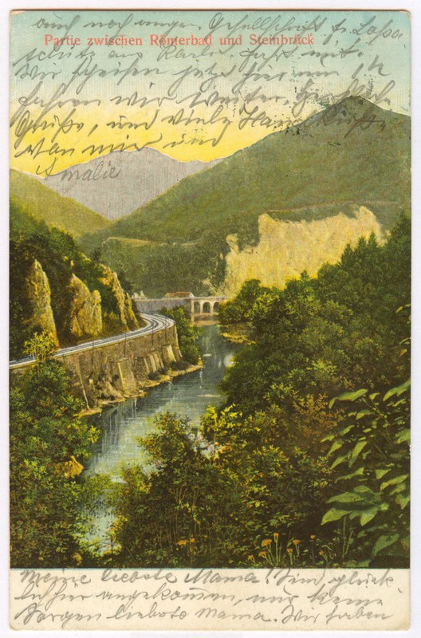
2Železniški delavci so v Laško prišli že leta 1845 in so tam ostali do leta 1848.9 Nastanjeni so bili na železniški postaji, po različnih hišah, v hiši številka 63, ki se je nahajala na levem bregu Savinje tik ob reki, so imeli svojo bolnišnico, druga bolnišnica železničarskih delavcev pa se je nahajala izven trga v graščini v Marija Gradcu. Delavci so najpogosteje prihajali s Češke in Moravske ter iz severne Italije. Nekaj pa jih je bilo tudi s Hrvaške, iz Istre, z Ogrske, Kranjske, Štajerske, iz Salzburga in s Saške.10 Za celotno karavano tujih delavcev, ki so sodelovali pri gradnji Južne železnice, je bilo značilno, da so veliko večino predstavljali nekvalificirani delavci iz Padske nižine, še posebej iz Benečije.11 Takšna množica delavcev iz tujine je v tako majhen kraj prinesla precej nemira in predvsem nereda, saj ti ljudje po navadi sploh niso imeli nobenih osebnih dokumentov in se je tako med njimi lahko skrivalo veliko sumljivih oseb.12 Nesreče, utopitve in nepojasnjene smrti so bile med delavci, ki so gradili železniško progo, pogoste. Povsod po krajih ob železnici se je dogajalo, da so delavci kradli poljske pridelke in sadje. To je šlo tako daleč, da so denimo v Zasavju morali nastaniti vojake, ki so skrbeli za red in mir med železničarskimi delavci.13 Gradnjo železniške proge so vsepovsod s pridom izkoristili domačini, obrtniki so imeli polne roke dela s popravljanjem oblačil in čevljev, gostilničarji so imeli polno gostov, kmetje so lahko vse svoje pridelke prodajali delavcem, hkrati pa povečali svoje dohodke s prevozom kamenja.14
3Večina železničarskih delavcev je bila samska, med njimi je bilo tudi veliko žensk, zato je v tem obdobju precej naraslo število nezakonskih rojstev v župniji. Te nezakonske matere so bile samske železničarske delavke.15 Smrtnost med železničarskimi delavci je bila velika, saj so bili pri delu izpostavljeni raznim nesrečam, poleg tega pa so živeli v prenatrpanih barakah, kjer so vladale slabe higienske razmere. Zaradi tega je med njimi prišlo do izbruha epidemije tifusa, ki se je najprej pojavil v železničarski bolnišnici v Marija Gradcu, nato pa tudi med delavci v Laškem.16 Zaradi epidemije so v barako v Laškem preselili vse delavce, ki so oboleli za tifusom.17 Tako za tifus kot tudi za druge kužne bolezni je bilo značilno, da so izbruhnile povsod tam, kjer so bili ljudje primorani živeti v slabih higienskih razmerah, k izbruhu kužnih bolezni pa so dodatno pripomogli še pomanjkanje vode in hrane ter posledična izčrpanost.18 V Laškem je med železniškimi delavci izbruhnil pegasti tifus, ki je bil sicer pogost med vojaki, v zaporih in taboriščih, prenašale pa so ga gvantne uši, ki so se zadrževale na oblačilih.19
43. januarja 1849 je iz Celja v Laško pripeljal prvi delovni vlak, iz Laškega v Zidani Most pa je prvi delovni vlak peljal pol leta kasneje, 3. julija 1849.20 18. avgusta 1849 je bila proga Celje–Ljubljana otvorjena.21 V Laškem in tudi v ostalih krajih ob železnici so svečano okrasili železniško postajo in njeno okolico, saj se je med ljudmi razširila vest, da bo progo otvoril sam cesar. Na koncu je namesto cesarja, ki je zbolel, progo otvoril nadvojvoda Albreht, a veselje ljudi ni bilo zato nič manjše. Nadvojvoda Albreht se je skozi Laško le peljal, postanek pa je vlak naredil v Zidanem Mostu, kjer so na mostu čez Savinjo postavili obeliske, okrašene z zastavami. Tam je nadvojvodo pozdravil novomeški glavar z množico lokalnega prebivalstva.22
5Južna železnica je prinesla nov veter v prostorski razvoj mest in trgov ob njej.23 Na eni strani so ob železniški progi zrasle imenitne ulice z reprezentančnimi stavbami in prestižnimi stanovanji, na drugi pa industrijski objekti.24 Brez železniške proge Dunaj–Trst bi si danes Laško delilo usodo razvojno odrinjenih in od glavnih prometnic ločenih kozjanskih trgov, kot so Planina pri Sevnici, Pilštanj in Podsreda.25 S prihodom prvega vlaka se je v Laškem začel hiter gospodarski vzpon. Skupaj z vlakom je leta 1849 Laško dobilo tudi pošto.26 Boljša prometna povezava s cesto in železnico je v te kraje pripeljala številne bogate ljudi, ki so svoj denar investirali v razvoj gospodarstva v kraju. Tako so se razvili zdravilišče v Laškem, pivovarna in premogovnik. Omenjena podjetja so prebivalcem Laškega dajala delo in kruh vse do današnjih dni.
1Slovenija je bila vselej področje majhnih mest in trgov. Tudi na Spodnjem Štajerskem je bilo veliko trgov, ki so še v drugi polovici 19. stoletja šteli manj kot 300 prebivalcev (Ptujska Gora, Pilštanj, Lemberg).27 Laško je sredi 18. stoletja imelo 64 hiš, kar ga je uvrščalo med srednje velike trge na Štajerskem.28 Bližnja okolica Laškega je bila v 18. stoletju pretežno agrarna, prevladovale so predvsem srednje velike (polovične in četrtinske) kmetije in kajžarije.29 Okoli leta 1820 se je število prebivalcev Laškega že precej povečalo, saj je Laško štelo že 144 hiš, v katerih je prebivalo 545 prebivalcev.30
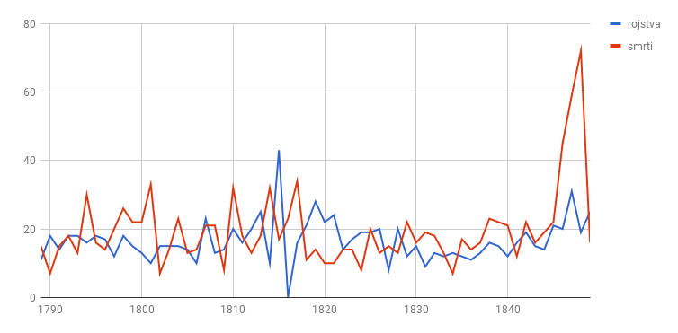
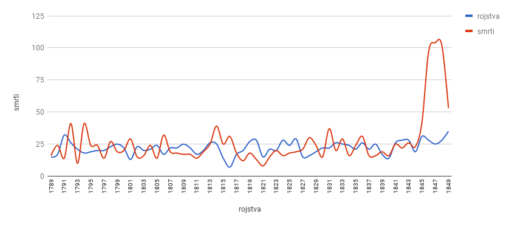
2Iz grafov je razvidno, da je za prvo polovico 19. stoletja v Laškem in okoliških vaseh značilna precejšnja stagnacija prebivalstva, celo upadanje. Naravni prirastek je še posebej negativen za trg Laško, ki beleži pozitiven naravni prirastek le v dvajsetih letih 19. stoletja. Vse kaže na to, da so težkemu vojnemu in povojnemu obdobju z lakoto in pomanjkanjem sledila leta izboljšanja gospodarskih razmer, ki so se odražala v porastu števila rojstev.
3Podobne trende rasti prebivalstva so beležili tudi drugod na Štajerskem, saj je v letih 1804–1816 opazno splošno upadanje števila prebivalstva. Razlog za stagnacijo ali upadanje števila prebivalstva je splošna stabilnost prebivalstva v Evropi, ki je začelo rasti šele v drugi polovici 18. stoletja, pri tem pa so slovenske dežele nekoliko zaostajale in se je prebivalstvo pri nas začelo povečevati šele po letu 1818.31 Od vseh slovenskih dežel je najnižjo rast prebivalstva beležila Štajerska. Na Štajerskem je bila smrtnost zelo visoka, rodnost pa zelo nizka. V primerjavi s Srednjo in Zgornjo Štajersko je bila rodnost v Spodnji Štajerski precej višja.32 Posamična leta pomanjkanja v prvem desetletju 19. stoletja in lakote v letih 1815–1817 so na primeru Laškega in izbranih okoliških vasi precej bolj opazna na podeželju, saj je to v omenjenem obdobju beležilo višji negativni prirastek kot trg. Razloge za to lahko iščemo predvsem v izredno slabih vremenskih razmerah za kmetijstvo. Na manjšo kmetijsko produkcijo pa je vplivala tudi večja odvisnost podeželskega prebivalstva od zemlje, saj se je zaradi posledic vojne, natančneje velikih rekrutacij in s tem pomanjkanja delovne sile, agrarna produkcija zmanjšala, kar je povzročilo zadnjo večjo lakoto.33 Poleg Štajerske je od slovenskih dežel velik upad prebivalstva v začetku 19. stoletja beležila tudi Koroška.34 V letih 1806–1820 se je število prebivalstva na Štajerskem z 813.113 zmanjšalo na 777.926 prebivalcev.35
4V štiridesetih letih je bilo Laško skupaj z vsemi obravnavanimi vasmi deležno gospodarske spodbude, ki jo je v naše kraje prinesla gradnja Južne železnice. Da pa ta ni bila tako svetla, kot se je najprej zdelo, dokazuje velika smrtnost v letih 1840–1849. V Laškem in še posebej vaseh, kot so Marija Gradec, Sv. Krištof, Šmihel in Debro, se je v tem obdobju mudila truma delavcev, ki so sodelovali pri gradnji železnice. Delavci so bili izčrpani, delovne nesreče so bile pogoste, za nameček pa je med njimi leta 1845 izbruhnila epidemija tifusa, ki se je razširila tudi med domače prebivalstvo. Trajala je vse do leta 1848 ter zahtevala 224 življenj, 155 železniških delavcev in 69 domačinov.
5Tudi sicer je bila smrtnost med delavci, ki so gradili železnico, precej visoka, saj je v letih 1845–1848 na območju Laškega in okoliških vasi umrlo kar 274 delavcev, od tega je bilo 246 moških in 28 žensk. Med vzroki smrti so prevladovale predvsem jetika, vodenica in vročica, nekaj pa je bilo tudi utopitev v Savinji. Izbruh epidemije tifusa in velika splošna umrljivost med železniškimi delavci kažeta na to, da so bile splošne bivanjske in delovne razmere teh ljudi izredno slabe. Tifus je okoli leta 1845 pustošil tudi drugod po Slovenskem.36
6Kot je bilo že navedeno, se je v karavani nahajalo tudi nekaj žensk, ki jim je v Laškem in okolici uspelo dvigniti stopnjo rodnosti, pa čeprav na račun nezakonskih rojstev. V letih 1845–1848 se je na območju Laškega, Debra, Marija Gradca in Šmihela rodilo kar devetnajst otrok, katerih matere so bile delavke, ki so sodelovale pri gradnji železnice. Največ (osem) jih je prihajalo s Češke in Moravske, preostale pa so prihajale iz Benečije, z Ogrskega in s Kranjskega. O zelo slabi oskrbi teh ljudi zgovorno pripoveduje tudi podatek, da so kar tri železniške delavke otroka povile popolnoma same, brez pomoči drugih, oziroma v krstni knjigi babica, ki bi pomagala pri porodu, ni navedena.
7Matere so v veliki večini primerov izbrale za botre svojih otrok kar svoje nadrejene iz železniške karavane, slaba polovica krščencev pa je svoje botre dobila med domačini.
8Oskrba novorojenčkov in otrok železničarskih delavk je bila zelo slaba. O tem zgovorno priča podatek, da je med smrtnimi primeri železniških delavcev tudi osem otrok do petega leta. Sicer pa je bila povprečna starost umrlih železniških delavcev 36,5 leta.
9Gradnja Južne železnice je kratkoročno in tudi dolgoročno dodobra spremenila demografske kazalce v Laškem in okolici. Zaradi velikega vpliva prisotnosti delavcev, ki so gradili Južno železnico, je treba še posebej kazalce o smrtnosti in nezakonskih rojstvih jemati z določeno mero kritične presoje.
10Če pri kazalcih rodnosti in smrtnosti odštejemo število smrti železničarskih delavcev, dobimo precej omiljeno sliko prej zelo velike mortalitete, ki pa je še vedno višja od natalitete v tem desetletju, kar gre deloma pripisati tudi epidemiji tifusa, ki je zahtevala življenja 69 domačinov.
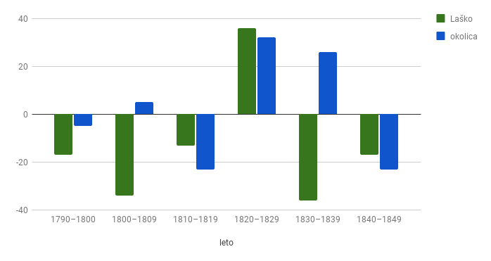
11Podatki o naravnem prirastku za Laško in okolico, v katerih niso zajete smrti železniških delavcev, še vedno kažejo na to, da je bila rast prebivalstva na podeželju večja od rasti prebivalstva v trgu. Tako je Laško v obravnavanem obdobju imelo pozitiven naravni prirastek le v dvajsetih letih 19. stoletja, medtem ko je podeželska okolica trga kar tri desetletja beležila pozitivno rast prebivalstva. Skupni naravni prirastek v letih 1789–1849 pa se med obema vzorcema zelo razlikuje. V Laškem je umrlo 81 ljudi več, kot se jih je rodilo; medtem pa so v okoliških vaseh beležili rahlo rast prebivalstva. Glede na podatke iz ljudskih štetij se je število prebivalcev v Laškem v celi prvi polovici 19. stoletja gibalo med 500 in 545 prebivalci, zato je moralo Laško svoj demografski primanjkljaj nadomestiti s priseljevanjem prebivalstva.
12Poleg ostalih vzrokov smrti so v 19. stoletju v slovenskih deželah ljudi pestile tudi številne sezonske lakote in epidemije. Še posebej sta izstopali epidemiji kolere in tifusa. Epidemija kolere, ki je na Slovenskem v 19. stoletju zahtevala mnogo življenj, je Laško in njegovo bližnjo okolico na srečo obšla, je pa Laško in bližnji Marija Gradec med gradnjo Južne železnice leta 1847 močno prizadela epidemija pegastega tifusa, o kateri smo že govorili. Epidemija je izbruhnila med železniškimi delavci in zahtevala tudi nekaj življenj domačinov. Podobna epidemija pegastega tifusa je leta 1850 izbruhnila v Mariboru, ravno tako med železniškimi delavci.37
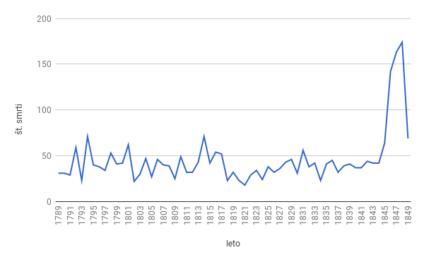
13V letih 1845–1849 je smrtnost v Laškem in okolici močno narasla, razlog za tako skokovit porast števila smrti je bil že omenjeni izbruh tifusa. Poleg omenjene epidemije tifusa je na vsem Štajerskem prišlo do več izbruhov kužnih bolezni, ki pa Laškega niso občutneje prizadele. Višja smrtnost na prelomu iz 18. v 19. stoletje je bila posledica turbulentnega obdobja, ki so ga zaznamovale francoske vojne, veliko pomanjkanje in še lakota med letoma 1816 in 1817, ki je bila posledica klimatskih sprememb, ki so povzročile več slabih letin zapored.
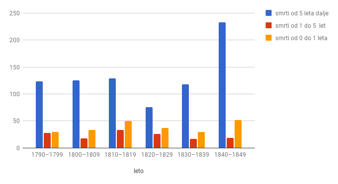
14Grafikon smrti po desetletjih kaže, da se nihanja smrtnosti otrok in odraslih po posameznih desetletjih ujemajo, razen v štiridesetih letih, ko je epidemija tifusa prizadela skoraj izključno odraslo populacijo.
15Četudi je bila v omenjenih letih smrtnost dojenčkov povečana, med vzroki smrti ni videti kakšnega posebnega trenda množičnega umiranja za eno vrsto bolezni.
16Pri odraslih število smrti ni nikoli preseglo 26 smrti letno. Izjema je bila le že večkrat omenjena epidemija tifusa.
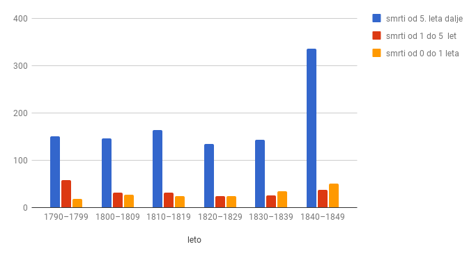
17Število smrti je bilo v okoliških vaseh glede na posamezna desetletja izpostavljeno manjšim nihanjem kot v trgu. Izredno velik porast števila smrti pa je povzročila velika epidemija tifusa, ki je okolico prizadela še v nekoliko večji meri kot sam trg, saj je bilo žarišče epidemije v okoliškem naselju Marija Gradec.
18Število nezakonskih rojstev je bilo vse do dvajsetih let 19. stoletja razmeroma nizko in se v daljšem časovnem obdobju ni spreminjalo. Večja letna nihanja števila nezakonskih rojstev so opazna predvsem v okolici Laškega, kjer po več let zapored niso zabeležili nobenega nezakonskega rojstva. V drugi četrtini 19. stoletja se je število nezakonskih rojstev počasi povečevalo in svoj višek doseglo v letih 1845–1849. Vzrok za tako veliko povečanje nezakonskih rojstev sta bili uvedba ženitnih dovoljenj leta 1820 in že omenjena gradnja Južne železnice.
19V nasprotju z Laškim, kjer se je število nezakonskih rojstev med gradnjo železnice močno povečalo, je imela ta različen vpliv na število nezakonskih rojstev v drugih krajih, skozi katere je potekala. Tako na primer v Župniji Trnovo na ilirskobistriškem gradnja Južne železnice ni bistveno vplivala na število nezakonskih rojstev.38
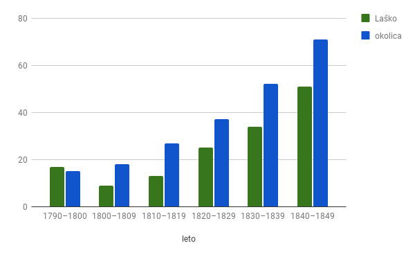
20Pregled gibanja nezakonskih rojstev po desetletjih nazorneje prikazuje trend njihove rasti v Laškem in njegovi okolici. Opazno je, da je bilo v Laškem število nezakonskih rojstev v zadnjem desetletju 18. stoletja večje kot v prvih dveh desetletjih 19. stoletja, v okoliških vaseh pa je opazna konstantna rast števila nezakonskih rojstev, ki je tako kot v Laškem svoj višek doživela med gradnjo Južne železnice.
21Število nezakonskih rojstev v Laškem v prvih dveh desetletjih 19. stoletja ni opazneje naraslo, a če pogledamo podrobneje, je število nezakonskih rojstev v Laškem malce naraslo leta 1812, v okolici pa je število nezakonskih rojstev opazno naraslo v letu 1813. Zanimivo je, da je bil delež nezakonskih rojstev v Laškem že v tridesetih letih 19. stoletja enako velik kot desetletje kasneje, ko je, kot že omenjeno, demografsko sliko Laškega precej popestrila gradnja Južne železnice.
22Da so samske železničarske delavke, ki so v Laškem rodile kar devetnajst otrok, močno zvišale povprečje nezakonskih rojstev, govori tudi grafikon 8, ki ponazarja odstotek nezakonskih rojstev, neupoštevajoč nezakonska rojstva železničarskih delavk.
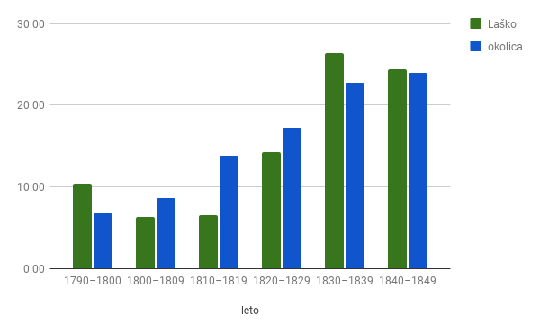
1Železničarski delavci, ki so v Laškem in njegovi okolici gradili železniško progo Celje–Zidani Most, so svoje sledi pustili v matičnih knjigah Župnije Laško. Bodisi se je njihovo bivanje v Laškem tragično končalo ali pa so v Laškem s poroko ali rojstvom otroka odprli novo poglavje v svojem življenju. Če se odpravimo po sledeh njihovih zapisov, ugotovimo, da se le-ti pojavljajo tako v rojstnih kot poročnih in mrliških matičnih knjigah.
2Matične knjige razkrivajo, da je bilo med delavci manjše število delavk. Nekatere od njih so v času svojega dela in bivanja na območju Laškega povile otroka. V krstni matični knjigi je bilo v letih 1845–1948 zabeleženih devetnajst rojstev nezakonskih otrok, ki so se rodili samskim železničarskim delavkam. Od tega je več kot polovica (enajst) železniških delavk rodila v okoliških vaseh ob železniški progi. Bivanjske in higienske razmere železniških delavcev so bile zelo slabe. O tem zgovorno priča tudi podatek, da je le pri sedmih od devetnajstih porodov prisostvovala izprašana trška babica (izšolana poklicna babica), tri železniške delavke pa so rodile same, brez pomoči.
3Na podeželju je bilo tudi sicer v navadi, da porodnicam pri porodu ni pomagala izprašana babica, ampak katera od sovaščank, ki je že imela izkušnje s porodom. Razlog za tako majhno prisotnost izprašane babice je tudi ta, da sta v obravnavanem obdobju na območju celotnega okraja Laško delovali le dve izprašani babici.39 Tudi t. i. neizprašane babice, ki sicer niso imele formalne izobrazbe, je duhovnik vpisal v matično knjigo, kamor je pribeležil, da je bila babica neizprašana. Praznina v kategoriji, kamor bi moral duhovnik vpisati ime babice, zgovorno priča, da so železniške delavke po vsej verjetnosti rojevale same oziroma ob sebi niso imele izkušenih žensk. Popolnoma sama je samska delavka na železnici Elizabeta Wollena s Češke sedmega julija 1845 v vasi Debro v bližini Laškega rodila hči Marijo. Hči so krstili še isti dan, mati si je za botra svoje hčere izbrala železniškega delavca Mathiasa Gladerja in njegovo ženo Evo. Malo več kot mesec dni kasneje se je v župnijskem uradu v Laškem zglasil tudi Marijin oče, železniški delavec Joseph Schwarz, ki je v prisotnosti dveh prič priznal očetovstvo. 40
4Nastanitve za delavke in delavce, ki so gradili železniško progo, so bile zelo slabe, ravno tako lahko predvidevamo, da je bila zelo slaba tudi skrb za novorojene otroke. Na splošno je veljalo, da je bila zaradi slabše nege, prehrane in drugih dejavnikov smrtnost otrok, še posebej nezakonskih, zelo visoka.41 Takšna je bila tudi usoda Katarine Moshin, nezakonske hčere delavke na železnici Marije Moshin s Češke. Katarina je umrla triindvajsetega decembra 1847 v Šmihelu številka osem. Duhovnik je kot razlog smrti navedel oslovski kašelj. Katarina je bila ob smrti stara eno leto in tri mesece.42 Primer smrti enoletne Katarine lahko osvetlimo tudi z drugega zornega kota. Podatki iz matičnih knjig razkrivajo, da je Katarina vse svoje kratko življenje preživela na istem naslovu in se z materjo ni selila. Bila je tudi ena redkih, ki se je rodila ob prisotnosti izprašane trške babice.43
5Največ železničarskih delavk, ki so svoje otroke rodile v Laškem, je izviralo s Češke (osem), preostale pa so izhajale še iz Šlezije, Benečije, z Madžarske, Kranjske (Novo mesto, Kamnik) in Štajerske (Šentilj). V začetku 19. stoletja je največ ženske delovne sile v habsburški monarhiji migriralo s Češke, Moravske, iz Šlezije ter tudi z Madžarske, iz Galicije in Bukovine.44
6Podatki o botrih otrok, ki so se rodili železničarskim delavkam, razkrivajo njihove socialne povezave med karavano železničarskih delavcev in lokalnim prebivalstvom. V matičnih knjigah je bilo pri krstih otrok železničarskih delavk zabeleženih skupno sedemindvajset botrov, od tega jih je šestnajst izviralo iz vrst železničarskih delavcev, preostali pa so izvirali iz vrst lokalnega prebivalstva. Šlo je predvsem za skupinovodje na Južni železnici, obrtnike in kmete. Botri so bili po družbeni lestvici praviloma eno stopnjo višje od nezakonskih mater krščencev. O tem govori tudi že omenjena zgodba nezakonske hčere Katarine Moshin iz Šmihela številka osem. Njena botra sta bila Anton Ružička, furman na Južni železnici, in njegova žena Katarina.45
7Bežne sledi so železničarski delavci in delavke pustili tudi v poročnih knjigah Župnije Laško. V času gradnje Južne železnice so se v Laškem poročili trije pari, povezani z gradnjo železnice. Novembra leta 1847 sta se v Laškem poročila Wencel Pribil, petindvajsetletni skupinovodja na Južni železnici s Češke, in Ana Benak, devetindvajsetletna vdova po železničarskem delavcu s Češke.46 Štiri mesece kasneje, marca 1848, se jima je rodil sin Alojzij.47 Datuma poroke in rojstva sina razkrivata, da sta se zakonca poročila »zaradi ljubezni«, saj je bila Ana na dan poroke že noseča.
8Ravno tako se je leta 1848, štiri leta po rojstvu nezakonskega sina, meščanska hči Marija Smodej iz Laškega poročila s skupinovodjo pri Južni železnici Mihaelom Miklavčem iz Celja. Ob poroki je ženin štiriletnega sina pozakonil. Oba zakonca sta bila ob poroki stara 30 let.48
9Največ podatkov o železniških delavcih nam razkrivajo mrliške matične knjige. Zaradi same narave dela, ki je bilo zelo nevarno, so bile delovne nesreče precej pogoste. Slabe higienske razmere v karavani delavcev so privedle do že omenjenega izbruha tifusa, ki se je razširil tudi na lokalno prebivalstvo. V letih 1945–1848 je v Laškem in okoliških vaseh umrlo 274 železniških delavcev, od tega je bilo 28 delavk. Največ železničarskih delavcev je prihajalo s Češke, iz Furlanije in Benečije, precej pa je bilo delavcev s Hrvaške, Kranjske in Spodnje Štajerske. V drugi polovici 19. stoletja je kar trinajst odstotkov vseh prebivalcev severne Italije sezonsko migriralo v druge predele habsburške monarhije in tudi izven njenih meja, kjer so opravljali sezonska dela v gradbeništvu.49 V letih 1872–1915 je 895.000 Furlanov našlo sezonsko delo v gradbeništvu v Avstrijskem cesarstvu.50
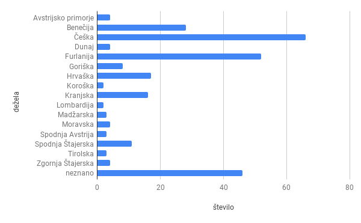
10Podatki iz mrliške knjige kažejo na to, da so nekatere delavke imele s seboj tudi svoje otroke. V mrliški knjigi je bilo zabeleženih kar dvajset smrti otrok, starih do dvanajst let. Od tega je bilo trinajst primerov smrti otrok, ki so umrli ob rojstvu ali mesec dni kasneje. Pri dojenčkih, ki so umrli takoj po rojstvu, je bil kot razlog smrti naveden prezgodnji porod, dva sta bila mrtvorojena. Ena od njih je bila tudi samska delavka Marija Kolar iz Samoborja na Hrvaškem, ki je tridesetega julija 1847 v Marija Gradcu številka devet prezgodaj rodila mrtvega dečka.51
11Na prezgodnji porod otrok in mrtvorojenost sta zagotovo imela velik vpliv težaško delo in slabe življenjske razmere delavk, ki so gradile železnico. Leta 1847 je umrla tudi komaj mesec dni stara Uršula, nezakonska hči samske delavke na železnici Lucije Žoher.52
12Ostali primeri smrti otrok so bili otroci železniških skupinovodij ali inženirjev, ki so, kot kaže, v Laškem prebivali skupaj s svojimi družinami. Ena takšnih družin je bila družina Johana Ružičke, ki je v času gradnje Južne železnice skozi Laško stanovala v Šmihelu. V družini je trinajstega decembra 1847 za posledicami vodenice umrla triletna Neža Ružička.53
13Odsotnost starejših otrok kaže na to, da so železničarske delavke svoje otroke kmalu po porodu dale v rejo in jih niso imele pri sebi. Za delovno aktivne nezakonske matere je bilo značilno, da so kmalu po porodu dale svojega otroka v rejo, saj so le tako lahko nadaljevale delo, od katerega je bilo odvisno njihovo in otrokovo preživetje.54 Nekatere so svoje otroke dale v rejo že takoj po porodu in so za njih skrbele dojilje. Spet druge so otroke obdržale pri sebi do njihovega prvega rojstnega dne (ta čas se je po navadi ujemal z obdobjem dojenja otroka) in so jih nato proti plačilu oddale v tako imenovano neformalno rejništvo starejšim ženskam, ki so skrbele za več nezakonskih otrok hkrati.55
14Zelo širok je bil tudi starostni razpon železničarskih delavcev, ki so umrli v Laškem. Najmlajši je štel petnajst, najstarejši pa 70 let. Povprečna starost železničarskih delavcev, glede na podatke iz mrliške knjige, je bila 36,5 leta. Štirideset delavcev je bilo starih med petnajst in enaindvajset let, kar je predstavljalo šestnajst odstotkov vseh umrlih železničarskih delavcev. V Laškem se je končala tudi kratka življenjska pot delavca Antona Schepuga iz Zagreba. Petnajstletni Anton je umrl za posledicami vodenice.56
15V devetnajstem stoletju je bilo še posebej za otroke iz revnejših slojev značilno, da so se že po dopolnjenem sedmem letu starosti preživljali sami kot posli,57 otroci med petnajstim in štiriindvajsetim letom pa so po takratni zakonodaji spadali med mladostnike.58 V Laškem je med delavci, ki so gradili železniško progo, pet mladostnikov umrlo za posledicami nesreče, štirje so se utopili v Savinji, šestnajst pa jih je umrlo za posledicami okužbe s pegastim tifusom. Zanimivo je dejstvo, da so bili mladostniki edine žrtve delovnih nesreč in utopitev v Savinji. V mrliški knjigi namreč za področje Laškega in njegovo bližnjo okolico ni nobenega zapisa o delovni nesreči ali utopitvi med odraslimi železničarskimi delavci. Mladoleten je bil tudi sedemnajstletni Anton Zannola iz italijanske province Belluno, ki so ga avgusta 1847 našli utopljenega v Savinji.59
16Največ železničarskih delavcev (143) je v Laškem umrlo za posledicami okužbe s pegastim tifusom, ki sicer na Spodnjem Štajerskem ni bil zelo pogost. Pegasti tifus je nalezljiva bolezen z visoko temperaturo, glavobolom, bolečinami v mišicah, izpuščajem, povečano vranico, prizadeto pa je tudi osrednje živčevje. Pegasti tifus povzročajo mikroorganizmi, ki jih prenašajo bele uši, te pa prebivajo na človeških oblačilih.60 Prvi primeri pegastega tifusa so se pojavili junija 1845 med železničarskimi delavci, ki so bili nastanjeni v graščini v Marija Gradcu. V letu 1846 se je bolezen razširila tudi med železniškimi delavci, ki so bili nastanjeni v Laškem številka 63, kjer so imeli začasno bolnišnico.61 Tega leta je za posledicami tifusa v Laškem in okoliških vaseh tudi umrlo največ ljudi, 59 delavcev, ki so gradili Južno železnico, in trideset domačinov. Tifus je tako med delavci kot tudi med lokalnim prebivalstvom vztrajal vse do leta 1848, ko se je gradnja železniške proge skozi Laško končala. Med pogostimi razlogi za smrt so bile tudi tuberkuloza, vodenica in vročica.
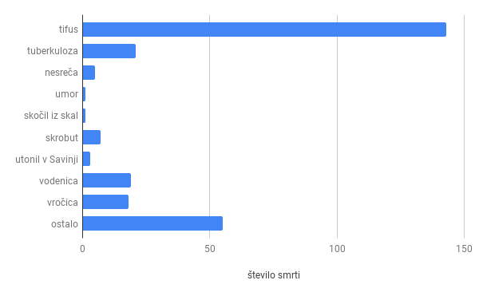
17Da je bilo delo železničarskih delavcev izjemno nevarno, dokazujejo tudi pogoste delovne nesreče s smrtnim izidom. Nesreče so se najpogosteje zgodile pri razstreljevanju skal, štirje mladi delavci pa so umrli zaradi utopitve v Savinji. 17. junija 1846 se je na delovišču pod Šmihelom pri razstreljevanju skal smrtno ponesrečil Nicolo Candolino iz Furlanije, ki je bil star osemnajst let.62
18Kot je bilo že omenjeno, so bile nepojasnjene smrti med delavci, ki so gradili železniško progo, pogoste, zato so kasneje v Zasavju poleg delavcev nastanili tudi vojake, ki so skrbeli za red in mir.63 V Laškem so v času gradnje železniške proge našli dva umorjena delavca.
1930. novembra 1846 so zjutraj v Laškem našli umorjenega Nicolo Coleria, dvaindvajsetletnega železničarskega delavca iz Furlanije. Zaradi nepojasnjenih okoliščin je bila narejena sodna obdukcija.64
20Gradnja železniške proge skozi Laško je bila zaradi neugodne lege skozi ozko rečno dolino zelo zahtevna in nevarna. Železniška proga je bila zgrajena na skalnatih pobočjih tik ob rečni strugi. O tem pričajo tudi zgoraj našteti primeri nesreč, veliko število utopitev, predvsem mladih delavcev, lahko pripišemo tudi temu, da so bili mladi fantje neplavalci.
1Gradnja železniške proge je bila brez dvoma eden največjih dogodkov, ki so zaznamovali Laško in njegove prebivalce v prvi polovici 19. stoletja. Poleg nove moderne prometne povezave s preostalim svetom in predvsem gospodarskega napredka, ki ga je le-ta spodbudila v Laškem, pa je Laščane zaznamovala tudi velika množica tujcev, ki so tri leta prebivali v Laškem. Velika množica delavcev iz vseh delov monarhije je dodobra pretresla trg, ki je takrat štel malo več kot 500 prebivalcev. Najbolj je seveda Laščane in okoliške prebivalce zaznamoval izbruh pegastega tifusa, ki je zaradi velike smrtnosti med lokalnim prebivalstvom zavrl njegovo rast. Na račun porok med delavci in lokalnim prebivalstvom ter nezakonskih otrok delavk, ki so gradile železniško progo, se je rahlo dvignila tudi rodnost. Vsekakor pa velja, da so Laščani in delavci, ki go gradili železniško progo, med seboj predvsem veliko sodelovali. Laščani so lahko v času gradnje železniške proge s prevozništvom in prodajo svojih pridelkov in izdelkov prišli do dodatnega zaslužka, sodelovali pa so tudi na drugih področjih. Tako je takratni okrajni zdravnik Urban Žnideržič pomagal mnogim železniškim delavcem, ki so bili žrtve nesreč in kužnih bolezni. Zgodba govori o tem, da so mu ti v zahvalo za njegovo hišo izklesali kamnit obok z zdravniškimi oznakami.65
* Dr., bibliotekarka z doktoratom, Osrednja knjižnica Celje, Muzejski trg 1a, SI-3000 Celje, alenka.hren.medved@knjiznica-celje.si
1. Curk, Slovenska Štajerska, 6, 8.
2. Prav tam, 4.
3. Schmutz, Historisch Topographisches Lexicon, 230.
4. Golec, Družba, 625.
5. Prav tam, 627.
6. Rybář, Pregled zgodovine, 23.
7. Cvirn in Studen, Ko vihar dirjajo hlaponi, 5–17.
8. Pirkovič, Južna železnica, 13.
9. Knjižnica Laško, Domoznanski oddelek, Karel Rustja, Zgodovina železnic, tipkopis (dalje Rustja, Zgodovina železnic).
10. Rustja, 150 let, 18.
11. De Bade, Evropa v gibanju, 98, 99.
12. Cvirn in Studen, Ko vihar dirjajo hlaponi, 19.
13. Prav tam, 19, 20.
14. Prav tam, 17. Rustja, 150 let, 19.
15. Hren Medved, Družina v Laškem, 88.
16. Hren, Trg Laško, 83.
17. Rustja, 150 let, 18.
18. Zupanič Slavec, Zgodovina zdravstva, 68
19. Prav tam.
20. Rustja, Zgodovina železnic.
21. Rustja, 150 let, 20.
22. Cvirn in Studen, Ko vihar dirjajo hlaponi, 22, 23.
23. Pirkovič, Južna železnica, 15.
24. Prav tam, 17.
25. Rustja, 150 let, 104.
26. Rustja, Zgodovina železnic.
27. Melik, Središča, 7.
28. Curk, Slovenska Štajerska, 6, 8.
29. Prav tam, 4.
30. Schmutz, Historisch Topographisches Lexicon, 230.
31. Zwitter, Prebivalstvo na Slovenskem, 43.
32. Prav tam, 47.
33. Prav tam, 42.
34. Prav tam, 41.
35. Kudler, Steiermarks Volkszahl, 124.
36. Zupanič Slavec, Epidemije, 203.
37. Macher, Medizinisch-statistische Topografie, 147.
38. Škrlj Počkaj, Prebivalstvo, 138.
39. Macher, Medizinisch-statistische Topografie, 583.
40. Krstna knjiga 1826–1850, 205.
41. Hren Medved, Edina budilka. Rožman, Peč, 45–56, 102–137.
42. Krstna knjiga 1826–1850, 229, Mrliška knjiga 1826–1855, 239.
43. Prav tam.
44. Hahn, Nowhere, 109.
45. Krstna knjiga 1826–1850, 229.
46. Poročna knjiga 1836–1854, 85.
47. Krstna knjiga 1826–1850, 266.
48. Poročna knjiga 1836–1854, 94. Krstna knjiga 1826–1850, 192.
49. Steidl, Migration Patterns, 75.
50. Prav tam.
51. Mrliška knjiga 1826–1855, 247. Krstna knjiga 1826–1850, 219.
52. Prav tam, 233.
53. Mrliška knjiga 1826–1855, 236.
54. Čeč, Življenjske usode, 10–71.
55. Čeč, Pravni položaj in življenjske usode, 226, 227.
56. Mrliška knjiga 1826–1855, 223.
57. Čeč, Pravni položaj in življenjske usode, 227.
58. Prav tam, 219.
59. Mrliška knjiga 1826–1855, 222.
60. Termania, geslo tifus.
61. Franciscejski kataster: SI AS 177/C/F/C494/s/PT. SI AS 177/C/F/C175/s/PT.
62. Mrliška knjiga 1846, 181.
63. Cvirn in Studen, Ko vihar dirjajo hlaponi, 19, 20.
64. Mrliška knjiga 1846, 193.
65. Maček, Laško skozi stoletja, 224.